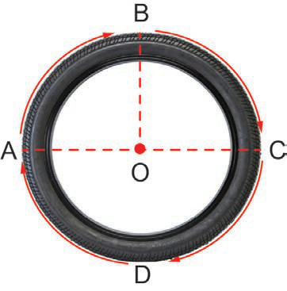

Circumference of a circle
The circumference of a circle is the distance around the circle. This is the length of a string that goes around a circle from the start to the end.
For example, consider the bicycle tyre ABCDA whose centre is at point O. Circumference of the bicycle tyre is the distance sorounding bicycle tyre. This is the length of rope sorounding the bicycle tyre from point A, B, C, D turning to point A.

AC is the diameter of the circle of the bicycle tyre and the distance from the centre of the circle of the bicycle tyre to any point on the circumference of a circle of the bicycle tyre is called the radius. Thus, OB, OA and OC are the radii of the circle of the bicycle tyre.
The diameter of a circle is denoted by a letter d, and its radius is denoted by a letter r. Hence, d = 2r.
Given the diameter or radius of the circular object, the circumference of a circular object is given by where C is a circumference of the circular object.